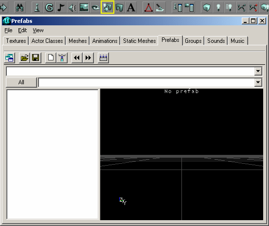

Prefab Browser
The Prefab Browser is one of several Resource Browsers in the UnrealEd Interface. By default it is docked in the Master Browser.
The prefab browser allows you to create and load prefabs: these are essentially collections of actors: CSG brushes, textures, lights, static meshes etc.
Prefabs can be extremely useful. If you build a hallway, complete with lights and textures, you can then use the prefab tab to create a copy of the hallway and use it over and over again. Once you have inserted a prefab into your level, you can then edit the brushes, lights, and textures.

Prefab Browser |
Opening
The Prefab Browser is accessed either of two ways:
- Do UnrealEd Main Menu → View → Prefab Browser
- Press the prefab browser button in the middle of the toolbar at the top of the Editor window. It looks like a little scenic display, to the left of the eye.
Browser Toolbar Buttons
- Dock / undock from browser window
- Open Package
- Save Package
- Create Prefab from selected Actors
- Insert Prefab into Level
- Previous Group
- Next Group
- Compile into Textures Preview
Browser Menus
File
- Open
- Open a prefab package.
- Save
- Save the current prefab package.
- Import
- Import a T3D file. These are files saved from UnrealEd that can contain any number of actors.
- Export
- Export to a .t3d file.
Edit
- Delete
- Delete the current prefab.
- Rename
- Rename the current prefab.
- Prev Group
- View the previous group in the current package.
- Next Group
- View the next group in the current package.
- Add to level
- Same as the insert prefab button; adds the current prefab into the level and selects all the parts.
- Create from Selections
- Creates a new prefab from any selected actors in the main viewports. Opens up the new prefab window so that you may select the package, group, and prefab name for the new prefab.
- Compile into Textured View
- Same as the button. Shows the prefab in full textured view in the preview window on the right.
View
- Docked
- Docks or undocks the prefab browser so that you can view it separate from other browsers.
Packages
Prefabs are organized into groups, which are organized into packages. Using the prefab browser window, you may open a package containing multiple prefabs and choose individual prefabs using the combo boxes.
- Use the top combo box to choose different packages that have been loaded.
- Use the bottom combo box to list different groups in the current package.
- To view all the prefabs in a single package, press the All button.
- Use the open and save buttons to open and save your packages. Remember that you cannot save prefabs alone, they must be contained inside a package.
Creating Prefabs
Creating and using prefabs is very easy. As I said before, prefabs can contain lights, and brushes with attached textures. Basically, anything that you can create in the editor windows, you can make into a prefab. If you have a cool light that you want to use over again, you can create a prefab of it. If you have a room that you spent a lot of work on and it is completely textured, you can create a prefab of it so that you don't have to go through all that work to create that room again.
Use the following steps to create a prefab from your level:
- Select all the actors and brushes that you want.
- Open up the Prefab browser using the View Menu or the Prefab browser button at the top.
- Press the Create Prefab from Selected Actors button
- When you press that button, you will see a box pop up like the one below.
- Press Ok and you should see the prefab prowser updated with your new package and group selected with the prefab you just made.
- Type in a package name. This is required. A common package name might be your map name. This way, you will know what prefabs can be found in the package, but you can name it anything you want.
- Type in a group name if you want. The group name is not required but can be helpful in organizing prefabs, such as hallways, walkways, lights, etc. If you choose not to include a group name, you may have to press the All button to see your prefab when you load in your package; this means that it's probably best to put all your prefabs into groups.
- Type in a name for your prefab. This is also required.
- You can use your mouse the same as in the perspective view in the main editor to move and rotate the camera to view your prefab.
- As you can see, you'll see your new prefab in wireframe mode. Any time you select a prefab from the list on the left, you will see it's wireframe view.
- To view it in full textured view, click on the Compile into Textured Preview button.
Using Prefabs
Inserting a prefab into your level is even more simple then creating it.
- Select the prefab you want from the list on the left
- Click on the Insert Prefab into Level button
- This inserts a new prefab into your level and selects all parts of the prefab so that you may edit it right away.
<< Main UnrealEd Interface
< Previous Mesh Browser | Static Mesh Browser Next >